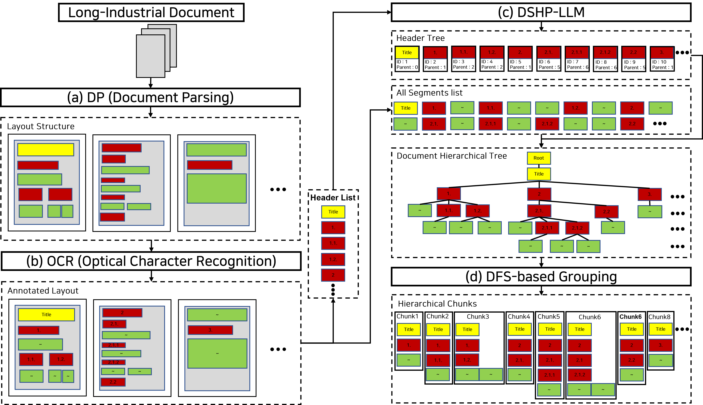

MultiDocFusion: Hierarchical and Multimodal Chunking Pipeline for Enhanced RAG on Long Industrial Documents
Top Conferences
Authors
Joongmin Shin*, Chanjun Park, Jeongbae Park, Jaehyung Seo, Heuiseok Lim
Abstract
MultiDocFusion combines vision parsing, OCR, and hierarchy reconstruction to preserve document structure during chunking. It improves retrieval quality for long and noisy inputs and provides stronger evidence composition for downstream QA.
Architecture
